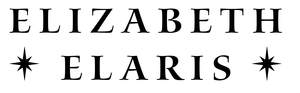

Trade Mark Journal No.2025/017 25 April 2025
UK00004187776 11 April 2025 (9,16,35,41)

- Class 9
- Books recorded on tape; Audio books; Talking books; Downloadable series of children’s books; Downloadable electronic books; Electronic book reader covers; Electronic book readers; Digital book readers; Ebook readers; Downloadable e-books; Downloadable podcasts; Downloadable videocasts; Downloadable videos; Digital books downloadable from the Internet; Downloadable publications; Downloadable movies; E-books; Downloadable software; Downloadable electronic newsletters; Downloadable electronic games; Downloadable electronic brochures; Electronic publications, downloadable; Publications (Electronic -), downloadable; Downloadable electronic publications; Electronic publications (downloadable); Downloadable e-wallets; Downloadable email software; Downloadable posters; Downloadable digital photos; Downloadable printing fonts; Podcasts; Media content; Software for designing online advertising on websites; Software for arranging online transactions; Software for operating an online shop; Software for evaluating customer behaviour in online shops; Electronic notebooks; Downloadable electronic publications in the nature of magazines; Downloadable virtual works of art; Audio recordings.
- Class 16
- Books; Non-fiction books; Fiction books; Series of non-fiction books; Comic books; Writing books; Manuscript books; Books for children; Cookery books; Copy books; Printed books; Covers for books; Music books; Series of fiction books; Coloring books; Educational books; Fantasy books; Autograph books; Story books; Colouring books; Travel books; Painting books; Baby books [storybooks]; Picture books; Gift books; Commemorative books; Cook books; Drawing books; Poster books; Guide books; Index books; Information books; Covers for cheque books; Check books; Prayer books; Hand books; Guest books; Recipe books; Resource books; Scrap books; Memorandum books; Flip books; Coupon books; Jackets of paper for books; Data books; Sticker books; Exercise books; Dictation books; School writing books; Account books; Song books; Agenda books; Manga comic books; Birthday books; Activity books; Date books; Note books; Children's books; Baby books; Log books; Rule books; Sketch books; Visitors books; Covering materials for books; Pop-up books; Appointment books; Composition books; Signature books; Wedding books; Telephone books; Score books; Coloring books for adults; Music note books; Address books; Writing or drawing books; Expense books; Binding materials for books and papers; Pocket books [stationery]; Books featuring fantasy stories; Graphic art books; Novels; Blank journal books; Books featuring fictional stories; Reference books; Book marks; Graphic novels; Book-cover paper; Book markers; Publication paper; Paper book markers; Romance novels; Book binders; Writing paper; Travel guide books; Art prints; Graphic art prints; Fine art prints; Writing stationery; Writing ink; Professional magazines; Writing sets; Writing materials; Writing tablets; Art paper; Prints; Notebooks; Photographic prints; Papers for painting and calligraphy; Sketchbooks; Prints [engravings]; Engravings [prints]; Canvas prints; Art pictures; Blank writing journals; Photo prints; Watercolor paintings.
- Class 35
- Subscriptions (arranging of) to books, reviews, newspapers or comic books; Business management of authors and writers; Publication of advertising literature; Publication of publicity texts; Publicity texts (Publication of -); Texts (Publication of publicity -); Promotion of special events; Sales promotion; Advertising and promotion services; Consultancy relating to sales promotions; Sales promotion services; Advertising, marketing and promotion services; Marketing, advertising and promotion services; Administration of sales promotion incentive programs; Publicity and sales promotion services; Sales promotion for others; Modeling services for advertising or sales promotion; Promotion services; Modelling agency services relating to sales promotions; Advertising, marketing and promotional services; Advertising, promotional and marketing services; Marketing, advertising, and promotional services; Publicity and sales promotion; Advertising services for the promotion of e-commerce; Sales promotion services for third parties; Promotional marketing; Modeling for advertising or sales promotion; Promotion, advertising and marketing of on-line websites; Administration of sales and promotional incentive schemes; Advertising and promotional services; Promotional advertising services; Brand creation services (advertising and promotion); Modelling for advertising or sales promotion; Promotion [advertising] of travel; Sales promotion for third parties; Promotion [advertising] of business; Administration of loyalty programs involving discounts or incentives; Advertising particularly services for the promotion of goods; Development of promotional campaigns; Promoting the goods and services of others through the administration of sales and promotional incentive schemes involving trading stamps; Modelling and models for advertising or sales promotion; Arranging advertising and promotional contracts for others; Advertising and promotion services and related consulting; Publicity and promotional services; Arranging and conducting marketing promotional events for others; Business promotion services; Business promotion; Promoting the sale of goods and services of others through promotional events; Sales promotion using audiovisual media; Management of customer loyalty, incentive or promotional schemes; Consultancy relating to advertising and promotion services; Advertising, promotional and public relations services; Distribution of advertising, marketing and promotional material; Developing promotional campaigns for businesses; Sales promotion for others through trading stamp schemes; Customer loyalty services for commercial, promotional and/or advertising purposes; Administration of incentive award programs to promote the sale of the goods and services of others; Affiliate marketing; Advertising and marketing services; Organisation of promotions using audiovisual media; Promotion of goods and services for others; Modelling agency services for sales promotion purposes; Developing promotional campaigns for business; Copywriting for advertising and promotional purposes; Customer club services, for commercial, promotional and/or advertising purposes; Administration of contests for advertising purpose; Promotional marketing services using audiovisual media; Organization, operation and supervision of sales and promotional incentive schemes; Distribution of advertising mail and of advertising supplements attached to regular editions; Administration of loyalty rewards programs; Promoting the sale of goods and services of others through the distribution of printed material and promotional contests; Loyalty, incentive and bonus program services; On-line advertising and marketing services; Promotion of goods through influencers; Organisation, operation and supervision of sales and promotional incentive schemes; Advertising and marketing; Advertising and publicity services; Promotional advertising relating to philosophical instruction; Dissemination of advertising and promotional materials; Computerised business promotion; Product marketing; Promoting the goods and services of others through discount card programs; Advertising, marketing and promotional consultancy, advisory and assistance services; Arranging promotion of charitable fundraising events; Promoting the goods and services of others by arranging for sponsors to affiliate their goods and services with awards programs; Marketing services; Research services relating to advertising and marketing; Producing promotional videotapes, video discs, and audio visual recordings; Production of video recordings for advertising purposes; Video recordings for advertising purposes (Production of -); Production of video recordings for marketing purposes; Video recordings for marketing purposes (Production of -); Online retail services for downloadable and pre-recorded music and movies; Influencer marketing; Blogger outreach services; Marketing advice; Creative marketing plan development services; Design of advertising logos; Design of advertising materials; Design of advertising brochures; Design of advertising flyers; Online marketing; Conducting virtual trade show exhibitions online; Online advertising; On-line advertising; Online retail services relating to jewelry; Retail services in relation to art materials; Copywriting; Retail services connected with the sale of clothing and clothing accessories; Arranging subscriptions to electronic journals; Film directing of advertising films; Marketing agency services; Book club services retailing books to its members.
- Class 41
- Publishing of books; Publishing of books, magazines; Publication of books; Books (Publication of -); Publishing of books and reviews; Loaning of books; Lending of books and other publications; Publishing of instructional books; Lending of books and periodicals; Publication of music books; Loans of books; Lending of books; Publication of audio books; Publication of books, reviews; Loan of books; Publishing services for books and magazines; Publication of books, magazines, almanacs and journals; Publication of educational books; Rental of books; Lending libraries for books; Publishing services for books; Publication of text books; Multimedia publishing of books; Hire of books; Services for the publication of books; Online electronic publishing of books and periodicals; Publishing of electronic books and journals online; Publishing of electronic books and journals on-line; Publishing of journals, books and handbooks in the field of medicine; Publication of year books; Online publication of electronic books and journals; Publication of electronic books and journals online; Electronic online publication of periodicals and books; Publication of electronic books and journals on-line; On-line publication of electronic books and journals; Library services for the exchanging of books; Providing online non-downloadable comic books and graphic novels; Rental of audio books; Lending of books relating to computers; Library services for the lending of books; Book publishing; Publication of electronic books and periodicals on the Internet; Services for the publication of guide books; Book and review publishing; Publication of instructional literature; Electronic book reader rental; Publication of textbooks; Screenplay writing; Publication of journals; Publication of texts; Publication of books relating to entertainment; Publication of photographs; Electronic publications (not downloadable); On-line publication of electronic books and journals (non-downloadable); Creation [writing] of educational content for podcasts; Publishing of reviews; Publication of online reviews in the field of entertainment; Writing services for blogs; Providing on-line reviews of books; Training courses in strategic planning relating to advertising, promotion, marketing and business; Providing user reviews for entertainment or cultural purposes; Lecture services relating to marketing skills; Online publications, namely blogs; Providing online training seminars; Provision of online tutorials; Providing online courses of instruction; Conducting courses, seminars and workshops; Online education services; Conducting training courses relating to nutrition online; Online digital publishing services; Online research library services; Conducting workshops and seminars in art appreciation; Conducting of workshops and seminars in art appreciation; Conducting workshops and seminars in personal awareness; Arranging of workshops and seminars; On-line publishing services; Seminars; Arranging and conducting of seminars and workshops; Arranging and conducting of workshops and seminars; Providing on-line publications (non-downloadable); Arranging of competitions via the Internet; Arranging and conducting of workshops and seminars in self-awareness; Meditation training; Life coaching (training); Teaching of meditation practices; Teaching of diet education; Freelance journalism; Publishing, reporting, and writing of texts; Magazine publishing; Creation [writing] of podcasts; Publishing of web magazines; Writing and publishing of texts, other than publicity texts; Publishing; Multimedia publishing of magazines, journals and newspapers; Multimedia publishing of journals; Publishing of journals; Art exhibitions; Film production.
Elizabeth Elaris Ltd